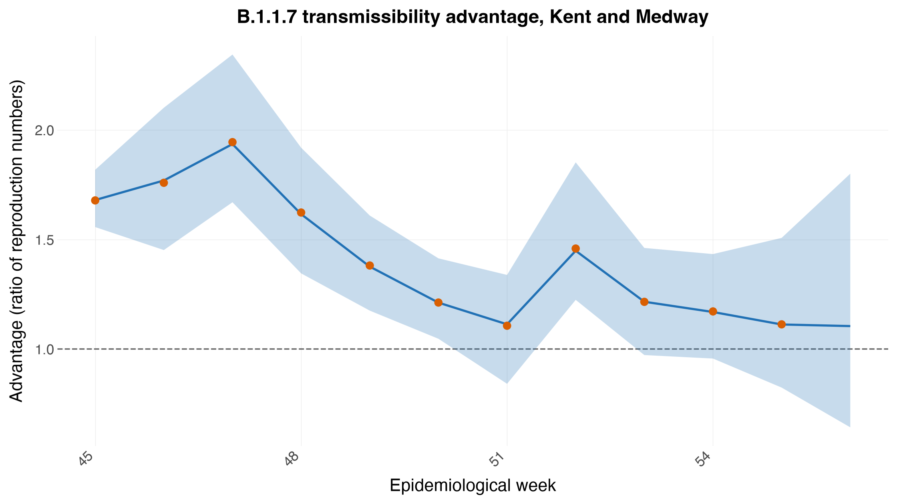
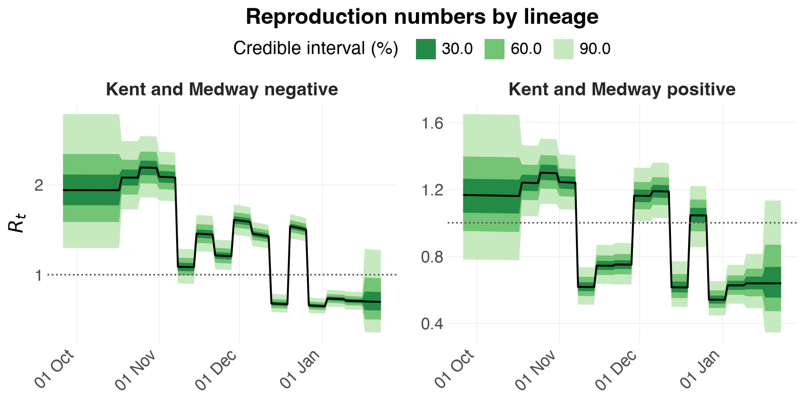
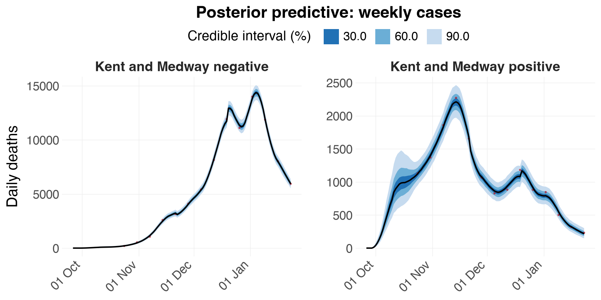

Transmissibility of a new variant¶
Volz et al. (2021) used epidemia to ask how much more transmissible SARS-CoV-2 lineage B.1.1.7 was than the lineages it displaced in England. This tutorial reproduces that analysis for one area.
The question has an awkward shape. Two lineages spread through the same population at the same time, under the same restrictions, and both are seen only through case counts. Anything that changes transmission for one — a lockdown, school holidays, behaviour — changes it for the other too. What we want is the ratio of their reproduction numbers, and the model has to be built so that ratio is a parameter rather than something reconstructed afterwards from two separate fits.
Read this as a demonstration of the method, not as a specification to copy. The structure and priors are the paper's own, but a tutorial is not an analysis. It fits one area rather than all of them, omits the machinery the authors used to get every area to converge, and makes no claim that these priors suit other data. The section "Not the paper's configuration" at the end sets out exactly what differs.
import numpy as np
import pandas as pd
from plotnine import (aes, geom_hline, geom_line, geom_point, geom_ribbon,
ggplot, labs)
import epidemia as epi
from epidemia.core import (EpiModelConfig, ObsModel, RandomWalk, fit_epidemia,
prepare_panel)
from epidemia.plots import save_plot, theme_epidemia
from epidemia.priors import normal
S-gene target failure¶
The measurement that makes this possible is an accident of assay design. Routine PCR testing in England used a three-target assay, and B.1.1.7 carries a deletion that makes the S-gene target fail while the other two still amplify. "S-gene target failure" (SGTF) therefore acts as a proxy for the lineage in ordinary testing data, without sequencing every sample.
Each area-day splits into corrected_negative (S-gene negative, so B.1.1.7)
and corrected_positive (everything else), already adjusted for testing
effort by the original authors.
b117 = epi.england_b117()
AREA = "Kent and Medway"
_k = b117.data[b117.data["area"] == AREA]
print(f"{AREA}: {len(_k)} days, {_k.date.min().date()} .. {_k.date.max().date()}")
print(f" B.1.1.7 {_k.corrected_negative.sum():,.0f} other "
f"{_k.corrected_positive.sum():,.0f} "
f"({100 * _k.corrected_negative.sum() / (_k.corrected_negative.sum() + _k.corrected_positive.sum()):.1f}% B.1.1.7)")
Kent and Medway: 120 days, 2020-09-26 .. 2021-01-23
B.1.1.7 88,009 other 15,012 (85.4% B.1.1.7)
We fit Kent and Medway, where B.1.1.7 was first identified and where replacement went furthest, while enough non-B.1.1.7 cases remain to serve as a comparison arm.
One area, two groups¶
The modelling idea is to treat each lineage in an area as its own group.
The area becomes two rows of the panel — Kent and Medway positive and
Kent and Medway negative — each with its own case series, seeded
independently, sharing a population. That turns a two-lineage problem into an
ordinary multi-group renewal model, and it is what lets the transmissibility
ratio be a single coefficient.
dat = (b117.data[b117.data["area"] == AREA]
.sort_values("date").reset_index(drop=True))
dat["week"] = dat["epiweek"].clip(lower=42)
positive = pd.DataFrame({
"area": f"{AREA} positive", "date": dat["date"], "week": dat["week"],
"Cases_week": dat["corrected_positive"], "neg": 0.0,
"negweek": np.nan,
})
negative = pd.DataFrame({
"area": f"{AREA} negative", "date": dat["date"], "week": dat["week"],
"Cases_week": dat["corrected_negative"], "neg": 1.0,
"negweek": dat["epiweek"].clip(lower=45),
})
panel_df = (pd.concat([positive, negative], ignore_index=True)
.merge(b117.iar, on="date", how="left"))
panel_df["iar"] = panel_df["iar"].ffill().bfill()
panel_df["pop"] = float(b117.pop.loc[b117.pop["area"] == AREA, "pop"].iloc[0])
Two things are worth pausing on.
neg is an indicator that is 1 only for the B.1.1.7 group. Because it is
constant within a group and the two groups share everything else, its
coefficient is the log transmissibility advantage — the quantity the paper
is about. It is not a nuisance term; it is the answer.
negweek is the epidemiological week for the B.1.1.7 group and missing for
the other. A random walk indexed by it therefore exists only for B.1.1.7,
which is how the advantage is allowed to vary over time. Clamping at 45 pools
the earliest weeks, when B.1.1.7 counts are too small to say anything.
Building the panel¶
The window is taken as given — the whole series, both groups — so
prepare_panel's own "start when deaths exceed a threshold" rule is switched
off with a column that is 1 from the first row.
panel_df["_win"] = 1.0
panel, series = prepare_panel(
panel_df, npis=["neg"], responses=["Cases_week"], group="area", pop="pop",
threshold_on="_win", threshold=0, seed_offset=1,
)
print(f"{len(panel.regions)} groups: {panel.regions}")
print(f"{int(panel.lengths.sum())} rows (R vignette: 240)")
2 groups: ['Kent and Medway negative', 'Kent and Medway positive']
240 rows (R vignette: 240)
/var/folders/3b/9h2hhrtd6m10021mpjqtv6s40000gn/T/ipykernel_67273/220630698.py:2: UserWarning: 'Kent and Medway negative': only 0 day(s) before cumulative _win exceeded 0, fewer than seed_offset=1; starting at the first available day.
/var/folders/3b/9h2hhrtd6m10021mpjqtv6s40000gn/T/ipykernel_67273/220630698.py:2: UserWarning: 'Kent and Medway positive': only 0 day(s) before cumulative _win exceeded 0, fewer than seed_offset=1; starting at the first available day.
The two random walks¶
R writes these as rw(time = week, prior_scale = 0.15) + rw(time = negweek)
in the formula. In Python a walk is a RandomWalk carrying an explicit index
per region-day, and a list of them is summed — the same thing epidemia does
with several rw() terms in one formula.
negweek is missing for the non-B.1.1.7 group, and -1 is how that is said:
it means "this day gets no term from this walk", which is exactly R's NA in
an rw(time = ) column.
def _walk_index(col, panel, panel_df):
"""Map a week column onto contiguous walk steps, with -1 where missing."""
M, T = len(panel.regions), panel.X.shape[1]
idx = np.full((M, T), -1, dtype=int)
levels = np.sort(panel_df[col].dropna().unique())
step = {v: i for i, v in enumerate(levels)}
for m, region in enumerate(panel.regions):
g = panel_df[panel_df["area"] == region].sort_values("date")
vals = g[col].to_numpy()[: panel.lengths[m]]
idx[m, : panel.lengths[m]] = [
step[v] if np.isfinite(v) else -1 for v in vals
]
return idx, levels
week_idx, week_levels = _walk_index("week", panel, panel_df)
negweek_idx, negweek_levels = _walk_index("negweek", panel, panel_df)
print(f"shared walk : {len(week_levels)} steps, weeks {week_levels.min():.0f}-{week_levels.max():.0f}")
print(f"B.1.1.7 walk: {len(negweek_levels)} steps, weeks {negweek_levels.min():.0f}-{negweek_levels.max():.0f}; "
f"{(negweek_idx == -1).sum()} region-days excluded")
shared walk : 15 steps, weeks 42-56
B.1.1.7 walk: 12 steps, weeks 45-56; 120 region-days excluded
The model¶
Three terms doing three jobs. The shared weekly walk absorbs everything that
moved transmission in Kent over this period — the November lockdown, its
lifting, Christmas mixing, the January lockdown — without any of it being
specified. neg is the constant advantage. The second walk lets that
advantage vary by week.
With a log link, the ratio of reproduction numbers between the groups on any day is \(\exp(\beta_{\text{neg}} + w^{(\text{negweek})}_t)\): the shared walk cancels. That cancellation is the point of the design — the estimate does not depend on getting the epidemic trajectory right, only on the two lineages experiencing it together.
def _region_column(col):
"""A (M, T) array of `col`, laid out in the panel's own region/day order."""
M, T = len(panel.regions), panel.X.shape[1]
out = np.zeros((M, T))
for m, region in enumerate(panel.regions):
g = panel_df[panel_df["area"] == region].sort_values("date")
n = panel.lengths[m]
out[m, :n] = g[col].to_numpy()[:n]
out[m, n:] = out[m, n - 1] if n else 0.0 # pad, never used
return out
# R writes this as `Cases_week ~ 0 + iar`: no intercept, one covariate holding
# the ascertainment rate, whose coefficient has a prior centred at 1. So the
# rate IS iar, up to a modest multiplicative correction.
iar_design = _region_column("iar")[:, :, None] # (M, T, 1)
obs = [ObsModel(
"Cases_week", series["Cases_week"]["y"], series["Cases_week"]["mask"],
i2o=b117.i2o, # sums to 7: each observation is a week
family="quasi_poisson",
link="identity",
intercept=False,
X=iar_design,
prior=normal(1.0, b117.iar_sd), # ascertainment supplied as data
prior_aux=normal(3.0, 2.0),
)]
config = EpiModelConfig(
gen=epi.europe_covid2().si, # same generation kernel as the paper
link="log",
intercept=True,
region_effects=False, # the two groups differ through `neg`
prior_intercept=normal(np.log(1.25), 0.1),
prior_covariates=normal(0.0, 0.25),
rw=[RandomWalk(index=week_idx, prior_scale=0.15),
RandomWalk(index=negweek_idx, prior_scale=0.2)],
seed_days=14,
seed_pooling=True,
seed_aux_rate=1 / 5000, # deliberately vague
pop_adjust=True,
)
Fitting¶
idata = fit_epidemia(panel, obs, config, draws=1000, tune=1000, chains=4,
seed=12345, adaptation="diag", target_accept=0.92,
maxdepth=14, progress_bar=False)
print(epi.sampler_diagnostics(idata))
Sampler diagnostics
4 chains x 1000 post-warmup draws = 4000
chain divergent max_treedepth ebfmi
1 0 0 0.883
2 0 0 0.761
3 0 0 0.811
4 0 0 0.763
Divergent transitions: 0 (0.0%)
Hit max treedepth: 0 (0.0%)
Lowest E-BFMI: 0.76
Worst R-hat: 1.010 (rw_noise[0, 0])
Lowest bulk ESS: 1134 (rw_noise[0, 1])
Lowest tail ESS: 1754
No problems detected.
The transmissibility advantage¶
The advantage in week \(w\) is the ratio of the two groups' reproduction numbers, \(R^{(\text{B.1.1.7})}_t / R^{(\text{other})}_t\). Compute it from the fitted \(R_t\) rather than from the coefficients: the shared walk cancels automatically, and it does not depend on how the walk parameters are stored — which differs between the two ports.
# Take the ratio of the two groups' fitted R_t series, which is what the
# original analysis does (transmission_model/gather_joint.R):
#
# rt <- posterior_rt(fit)
# Ratio_45 = quantile(rt$draws[, negative & epiweek == 45] /
# rt$draws[, positive & epiweek == 45], 0.5)
#
# Reading the coefficient and walk parameters out instead is a trap. R reports
# a walk's INCREMENTS while Python stores its cumulative levels, so the same
# arithmetic is right in one port and wrong in the other -- treating R's as
# levels flattened the curve to a correlation of 0.44 with the published series.
# Working from R_t sidesteps the parameterisation entirely, and the shared walk
# cancels in the ratio by construction.
rt = np.asarray(idata.posterior["Rt"].stack(s=("chain", "draw"))) # (M, T, S)
neg_i = panel.regions.index(f"{AREA} negative")
pos_i = panel.regions.index(f"{AREA} positive")
# Use the dataset's OWN epiweek column, not isocalendar(). The data numbers
# weeks continuously through the season (39..56), whereas ISO weeks restart at 1
# each January -- which would relabel the last four weeks 1, 2, 3 and silently
# drop them from the comparison.
dates = pd.to_datetime(panel.dates[neg_i])
_wk = dict(zip(b117.data["date"], b117.data["epiweek"]))
weeks = np.array([_wk[d] for d in dates])
rows = []
for w in np.unique(weeks[weeks >= 45]):
cols = np.flatnonzero(weeks == w)
a = (rt[neg_i, cols, :] / rt[pos_i, cols, :]).ravel()
rows.append({"epiweek": int(w), "median": np.median(a),
"lower": np.percentile(a, 2.5), "upper": np.percentile(a, 97.5)})
advantage = pd.DataFrame(rows)
published = (b117.published[b117.published["area"] == AREA]
[["epiweek", "ratio"]].rename(columns={"ratio": "published"}))
comparison = advantage.merge(published, on="epiweek", how="left")
print(comparison.round(2).to_string(index=False))
inside = comparison.dropna(subset=["published"])
cover = ((inside["published"] >= inside["lower"]) &
(inside["published"] <= inside["upper"])).sum()
print(f"\npublished values inside our 95% interval: {cover}/{len(inside)}")
epiweek median lower upper published
45 1.68 1.56 1.82 1.68
46 1.77 1.45 2.10 1.76
47 1.94 1.67 2.34 1.94
48 1.62 1.35 1.92 1.62
49 1.38 1.18 1.61 1.38
50 1.21 1.05 1.41 1.21
51 1.11 0.84 1.34 1.11
52 1.45 1.22 1.85 1.46
53 1.22 0.97 1.46 1.22
54 1.17 0.96 1.43 1.17
55 1.11 0.82 1.51 1.11
56 1.10 0.64 1.80 NaN
published values inside our 95% interval: 11/11
p = (
ggplot(comparison, aes("epiweek"))
+ geom_hline(yintercept=1, linetype="dashed", colour="#666666")
+ geom_ribbon(aes(ymin="lower", ymax="upper"), alpha=0.25, fill="#2171b5")
+ geom_line(aes(y="median"), colour="#2171b5", size=0.8)
+ geom_point(aes(y="published"), colour="#d95f02", size=2)
+ labs(x="Epidemiological week",
y="Advantage (ratio of reproduction numbers)",
title="B.1.1.7 transmissibility advantage, Kent and Medway")
+ theme_epidemia()
)
save_plot(p, "b117-advantage")
p
[epidemia] saved figures/b117-advantage.png
/Users/smishra/Documents/GitHub/epidemia/python/.venv/lib/python3.12/site-packages/plotnine/layer.py:374: PlotnineWarning: geom_point : Removed 1 rows containing missing values.
/Users/smishra/Documents/GitHub/epidemia/python/.venv/lib/python3.12/site-packages/plotnine/layer.py:374: PlotnineWarning: geom_point : Removed 1 rows containing missing values.

[epidemia] saved figures/b117-rt.png

epi.plots.plot_obs(idata, data=panel, obs_model=obs[0], series="Cases_week",
save="b117-obs", title="Posterior predictive: weekly cases")
[epidemia] saved figures/b117-obs.png

This is one area, not the paper's answer¶
The published estimate is not a single fit. Volz et al. fit this model
separately to each area in England — 42 of the areas in EnglandB117 have
the population needed for the susceptibility adjustment; the remaining seven
are NHS regions, aggregates of the others, which the source does not size. The
headline figure combines those per-area fits; no single area produces it.
That matters for reading the table. One area gives one noisy estimate, and its interval is wide — wide enough in some weeks to include no advantage at all. The strength of the published result comes from the same signal appearing in area after area, not from any one of them.
epiweek median lower upper
45 1.66 1.11 2.28
46 1.79 1.20 2.56
47 1.86 1.26 2.72
48 1.86 1.29 2.73
49 1.87 1.31 2.63
50 1.85 1.29 2.61
51 1.74 1.19 2.54
52 1.76 1.42 2.59
53 1.53 1.11 2.04
54 1.49 1.08 2.14
55 1.50 1.01 2.18
To reproduce that, loop this model over every area in b117.pop["area"],
keeping each fit separate, and combine the per-week advantages afterwards. The
original implementation does exactly that — one job per area, driven by a
Makefile, in transmission_model/ of
mrc-ide/sarscov2-b.1.1.7.
Not the paper's configuration¶
Everything structural is the paper's: the three-term predictor, normal(0,
0.25) on the advantage, normal(log(1.25), 0.1) on the intercept,
prior_scale=0.15 on the shared walk, normal(1, iar_sd) on the
ascertainment coefficient, normal(3, 2) on the dispersion, seed_days=14,
vague seeding, and the same generation distribution. The week clamps are
theirs too.
Three things are nonetheless not what produced the published numbers.
It is one area. The published estimate combines separate per-area fits.
There is no convergence machinery. The original script re-runs an area that
fails its diagnostics — doubling iterations and thinning, or raising
adapt_delta — and records the adjusted settings. Its fit_params.csv holds
89 such re-runs. Kent and Medway is not among them, so this area does fit at
the defaults; an arbitrary area may not, and this tutorial would report the bad
diagnostics rather than fix them.
max_treedepth is 14, not the 18 the original sets. Check rather than
assume: if the fit above saturated the tree depth zero times, the lower cap was
never binding.
More generally these priors were chosen for this question on these data. The informative intercept encodes what was known about \(R\) in England in autumn 2020; the tight ascertainment prior works because the ascertainment rate is supplied as data. None of that transfers automatically. Treat the structure as the reusable idea and the numbers as specific to this analysis.
What does not reproduce exactly¶
The counts are aggregates. The raw SGSS line-list behind them is disclosure-controlled — counts below five are suppressed at source — so the step from testing records to these tables cannot be re-run outside PHE.
The generation distribution is assumed identical for both lineages: the model asks whether B.1.1.7 transmitted more, not whether it transmitted on a different timescale. Separating those needs data this design does not contain.